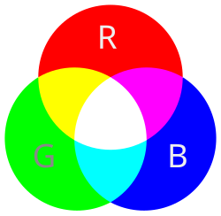

Kleurmodellen
Op deze pagina kom je meer te weten over kleurmodellen. Ben je benieuwd? Lees gauw verder!
| RGB-Model |
|---|
|
Als je lekker netflix aan het kijken bent, of aan het gamen, dat gebruik je een scherm. Maar hoe gaat dat eigenlijk verder? In je beeldscherm zitten allemaal kleine puntjes: pixels (picture + element). Deze puntjes bestaan uit rode, groene en blauwe lampjes. Die lampjes kan je sterk en zwak laten branden, hierdoor zie je verschillende kleuren op je beeldscherm. De drie basiskleuren kan je mengen en daardoor kan je meerdere kleuren maken. Dat zie je hier op het plaatje.  |
| CMY-Model |
|---|
|
Het CMY-Model wordt gebruikt wanneer je gaat printen op wit papier. Je kan het RGB-Model nu niet meer gebruiken, omdat er op wit papier wordt geprint en niet op zwart papier. De verschillende kleuren waarvan dit model gebruik maakt zijn geel, cyaan en magenta. Als je deze kleuren mengt, dan krijg je een soort donkergrijs. Dat wil je niet, dus wordt er een vierde kleur toegevoegd: black -> de K. Hierdoor kan je ook zwart printen. Eigenlijk is het dus een CMYK-model. Hier zie een je plaatje van dit model. 
|
| Hier zie je een filmpje over hoe je kleuren mengt. |
|---|